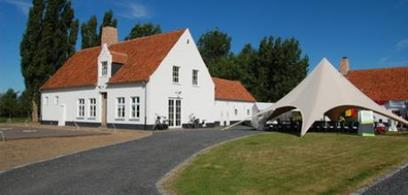
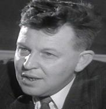

> nieuwsbrief > Jg. 2014 - nr. 4
Inhoud
6e Colloquium Joris van Severen
Op zaterdag 25 oktober 2014
gaat andermaal een Colloquium Joris van Severen – het 6e in de
rij - door. Plaats van het gebeuren is Van Severens
geboorteplaats Wakken.
De dagindeling ziet er uit als volgt:
·
plaats: Provinciedomein Baliekouter, Goed ‘Ter Mote’,
Omme-gangstraat 11, 8720 Wakken.
·
ontvangst: 9.00 uur, koffie of thee bij aankomst in de
cafetaria van de Baliekouter.
·
aanvang
colloquium: 9.30 uur in het
bezoekerscentrum (vlak naast de hoeve).
·
einde: voorzien omstreeks 17.30 uur.
programma:
·
welkomstwoord
door de heer Koen Degroote, burgemeester.
·
inleiding
door de heer
·
referaat
door drs. Tom Cobbaert: De Europese
gedachte bij Joris van Severen en het Verdinaso.
·
referaat
door drs. Luc Pauwels: Joris van Severen in
het brede Europese perspectief.
·
Conclusies
en slotwoord door de moderator Guy
van Gorp.
Na elk referaat zal er gelegenheid zijn tot het
stellen van vragen, o.l.v. de moderator. Gezien het colloquium
het karakter van een gesloten bijeenkomst draagt, is
voorafgaande aanmelding vereist (zie verder).
·
Gezamenlijk
middagmaal (facultatief – zie verder).
·
Na het
middagmaal is er ruim gelegenheid kennis te maken met het binnen
de Baliekouter door ‘Wakken Herdenkt’ heringerichte museum ‘Van Hugo Verriest tot
Joris van Severen’.
·
Om 15.00
uur: voorstelling door Pieter Jan Verstraete van de grote Fotobiografie Joris van
Severen.
·
Slotwoord en
aanbieding van een heildronk door
de heer Koen Degroote, burgemeester van Wakken-Dentergem.
·
Aansluitend
uitreiking van het boek aan de voorintekenaars en signeercessie.

Voor
het middagmaal (aperitief, Brueghel-maaltijd onder vorm van warm
en koud buffet) is inschrijving vooraf noodzakelijk via
aanmelding (tot uiterlijk 10 oktober) aan het
secretariaat.
De
deelnameprijs voor de ganse colloquium-dag bedraagt 8 € zonder
middagmaal en 30 € inclusief middagmaal (dranken exclusief en
dus persoonlijk af te rekenen). De bijdrage dient vooraf betaald
te worden op rekening BE71 0001 7058 1469 / BIC: BPOTBEB1)
t.n.v. het Studiecentrum Joris van Severen, Paddevijverstraat 2, 8900
Ieper. Na ontvangst van uw aanmelding ontvangt u bij
wijze van bevestiging een wegwijzer naar het Baliekouterdomein
te Wakken. De toegang tot de boekvoorstelling is mits aanmelding
vooraf bijdragevrij.
De referaathouders
Als
referaathouders komen drs. Luc Pauwels en drs. Tom Cobbaert aan
het woord. Eerstgenoemde is de auteur van De ideologische evolutie
van Joris van Severen. De tweede referaathouder, werkzaam
binnen het ADVN, promoveerde op het proefschrift De Europese gedachte bij de
Nieuwe Orde in Vlaanderen en is verbonden aan het ADVN
(Archief en Documentatiecentrum Vlaams-nationalisme).
Samen
zullen zij speuren naar de plaats van Joris van Severen binnen
het bredere Europese perspectief van de tussenoorlogse jaren.
Guy van Gorp treedt op als moderator.
Aansluitend
op het colloquium zal het 18e Jaarboek Joris van Severen
– zijnde de grote fotobiografie
waarvan hieronder uitgebreid sprake - voorgesteld worden en is
er gelegenheid kennis te maken met het vernieuwde museum ‘Van
Hugo Verriest tot Joris van Severen’ dat binnen het educatief
centrum van de Baliekouter een nieuw en waardig onderkomen vond.
Men
kan zich aanmelden, hetzij voor het colloquium, hetzij voor de
boekvoorstelling, hetzij voor allebei.
Wie
ook aan het colloquium deelneemt – en dus al van in de
voormiddag ter plaatse zal zijn - dient dit uitdrukkelijk te
vermelden, zodat we een middagmaal kunnen reserveren. De
bijdrage daartoe dient – als hoger vermeld - uiterlijk vóór 10
oktober vereffend te worden.
Fotobiografie Joris van Severen
De langverwachte Fotobiografie komt er
aan! Op de kaft van deze Nieuwsbrief
kunt u alvast de stofwikkel bewonderen. Het ingebonden boek
steekt vanzelfsprekend in een Dinaso-groene harde kaft. Met zijn
royale afmetingen van 24 x 29,7 cm, 248 pagina’s en niet minder
dan 648 illustraties in vierkleurendruk is het een prachtuitgave
geworden. Het boek wordt op 25 oktober voorgesteld
n.a.v. het colloquium te Wakken. De aanwezige voorintekenaars
krijgen daar hun exemplaar uitgereikt.
Wie zijn exemplaar van deze prestigieuze uitgave al
veilig stelde vond bovenaan op zijn adresetiket van de
gedrukte Nieuwsbrief het *-symbool bij wijze van
bevestiging. Het ontbreken van dit *-symbool wil er sommige
voormalige leden van het Studiecentrum alsnog op wijzen dat ze
hun bijdrage voor 2014 nog niet vereffenden. Bij wijze van
herinnering vinden ze dan ook andermaal een betaalformulier
ingesloten.
Wanneer u deze Nieuwsbrief
onder ogen is de datum waarop de voorintekeningstermijn voor de
fotobiografie en
tevens ook de voor-intekenprijs van 45 € (55 € inclusief
verzending) heel nabij. Vanaf 15 september (datum
waarop we de intekenlijst omwille van druktechnische redenen
dienen af te sluiten) geldt immers de prijs van 55 € (+ 10 €
verzendkosten voor wie het jaarboek via de post wenst te
ontvangen). De Fotobiografie
leent zich overigens ook uitstekend als relatiegeschenk.
Meerdere leden bestelde in dit perspectief meer dan een
exemplaar.
Bijlage aan de Fotobiografie: DVD ‘Eindpunt
en Opdracht’
Naar aanleiding van het traditionele bezoek aan de
graven van Joris van Severen en Jan Ryckoort van 1987 werd door
het toenmalige Nationaal Studie- en Documentatiecentrum Joris
van Severen een video aangemaakt, gerealiseerd door de
studioploeg van Rudi Reu-sens. Deze video waarop historische
filmbeelden over het Verdinaso afwisselen met beelden van de
herdenking in 1987, maakt als DVD-bijlage deel uit van de Fotobiografie en geeft
het boek aldus een sterke meerwaarde. Bovendien werden aan de
‘reportage’ van 1987 originele filmbeelden toegevoegd van
jeugdkampen van het Jong- Dinaso.
Toon van Overstraeten
We
hebben hem in ons leven, maar één keer gezien. Vier-
vijfendertig jaar geleden? Als jonge knaap waren we op
familiebezoek te Brugge. Toen we langs de reien wandelden,
kruiste hij onze weg. Mijn oom noemde zijn naam: Joris van
Severen.
De
ontmoeting te Brugge was een ontgoocheling: de man die ons
tegemoet kwam bleek een keurige burgerheer te zijn, mager en
misschien wel ascetisch - maar onze verbeelding kan ons ter zake
wel parten gespeeld hebben - doch in ieder geval véél kleiner,
véél nietiger dan we verwacht hadden van wie het commando voerde
over de militanten. We hebben het pas veel later geweten, want
onze kinderogen konden het nog niet zien: te Brugge liepen we de
hele Van Severen tegen het lijf.
Enerzijds
de leider, in blind vertrouwen gevolgd door mannen die voor hem
door het vuur zouden gaan - en anderzijds de kleine keurige
wereldvreemde en bij een eerste ontmoeting ietwat nietiger dan
zijn reputatie aandoende notariszoon: tussen deze twee uiterste
verschijningsvormen boog zich het spanningsveld van Van
Severens leven. Contact met het volk - dat voor hem echter
altijd een abstractie zou blijven - bracht deze zoon uit een
volksvreemde kaste van plattelandsburgerij tijdens zijn
studenten- en soldatenjaren tot de Vlaamse Beweging. Flamingant
in de eerste generatie, verplicht om te werken met wat achter
hem lag en om onvoorbereid het terrein te betreden waarop hij
straks zou gaan werken: hij kon niet anders zijn dan een vreemde
eend in de flamingantisme bijt. De apostolische ijver (ditmaal
geen neofietenijver, maar de ijver van een roekeloos en mateloos
idealisme) die hem bezielde, bracht hem tot een fel beleven en
verwoorden van wat hij voelde en dacht. Omgang met de gewone man
zou hem zijn leven lang moeilijk vallen, maar reeds jong bezat
hij de merkwaardige gave om vertrouwen te winnen, om mensen rond
zich te scharen, Toen hij in 1917 als jong officier wegens
flamingantisme van het front verwijderd werd, stonden zijn
soldaten opgesteld om hem uitgeleide te doen, ondanks het
verbod. Behalve misschien tijdens zijn studentenjaren te Gent
zal het de eerste maal geweest zijn dat hijzelf en zijn omgeving
zich rekenschap konden geven van de grote aantrekkingskracht die
van hem uitging.
Bezield,
altijd opnieuw waarachtig omdat hijzelf zijn hele leven een
zoeker naar waarheid zou blijven, was hij de man die vanuit
nieuwe gezichtspunten oude waarheden een revolutionaire dimensie
kon geven. ‘
Een
twijfelaar, een gespleten ziel. Een wandelaar tussen twee
werelden, door afkomst en traditie bijna veroordeeld om weer weg
te drijven van de zekerheden die zijn zoeken naar waarheid en
rechtvaardigheid hem een tijdlang had geboden.

Toon van Overstraeten (1926-2011)
We
waren reeds enkele keren aan zijn graf, daar op de verste grens
van de Nederlanden. Van de kerk van St.-Rikiers naar het graf te
Abbeville: een tocht van inkeer en herinneringen. We zijn blij
dat we het graf nog nooit zonder bloemen hebben gevonden. De
laatste keren waren het een handvol margrieten geplukt ergens in
een Picardische wei iets verder. We wisten echter: zijn
getrouwen leven nog en Van Severen leeft voort in hen allen die,
hoe dan ook, hartstochtelijk de Nederlandse droom koesteren.
18 mei 1971.
______________
Bron: dio Genes (ps. Toon van Overstaeten), Daarenboven zegt zijn natte
vinger hem…, Uitg. Soethoudt, 1982, pp. 142-143. Een
bundel cursiefjes voorheen verschenen in het Volksunie-blad Wij.
(*) Deze ‘kreet’ heeft Joris
van Severen nooit geslaakt! Ze maakt deel uit van een
hardnekkige mythe die, alhoewel meermaals aangetoond en
onderbouwd, niettemin blijft voortleven.
Rudy Pauwels (+)
De
Onafhankelijkheidsverklaring van de Verenigde Staten van Amerika
van 4 juli 1776 stelt dat alle mensen gelijk zijn in die zin dat
ieder mens recht heeft op:
Om
deze onvervreemdbare rechten te waarborgen stelt het volk
vertegenwoordigers aan die hun macht daaraan ontlenen en heeft
het volk het recht zijn vertegenwoordigers te vervangen of af te
zetten wanneer ze deze rechten veronachtzamen.
In
Amerika hebben de Founding Fathers (als John Adams,
Benjamin Franklin, Alexander Hamilton, Thomas Jefferson en James
Madison) aldus rond 1776 een politieke orde gesticht waarin de
Vrijheid alle kansen kreeg om te gedijen.
In
Frankrijk werd de “bevrijding” van 1789 al snel gevolgd door
terreur van Rousseau naar Robbespierre – de algemene wil van het
abstracte volk – om te eindigen in het bloedige imperialisme van
Napoleon.
In
Amerika ging de aandacht van de Founding Fathers uit
naar het verdelen en limiteren van de macht binnen de
oorspronkelijke volks-raden, zodat deze macht en uitdrukking van
gemeenschappelijk handelen bleef, dat gebaseerd op de trias
politica van Montesqieu (de scheiding van wetgevende,
uitvoerenden en rechterlijke macht) en altijd inherent aan de
burgerparticipatie een “limited gouvernement” kon
vormen met tal van wederzijdse beperkingen in de bevoegdheden
tussen federaal- en staatsniveau. Het was de opvatting van de
burgerzin die gelijk stond met verantwoordelijkheidszin.
In
Frankrijk zou geweld tot een tabula rasa en een spiraal
van geweld leiden, dat het gevolg was van een “volonté
générale” waarmee de Jakobijnen zich met het volk
identificeerden en de mens gedwongen werd in te stemmen met de
nieuwe opvatting van “citoyen” en de “tirannie van de
meerderheid”, de macht van het getal, waar niet eenieder het
recht had “gelukkig te zijn op zijn manier”; noch het recht “om
zelfstandig te denken” (Kant), of zelf als mens de mogelijkheid
te hebben om goed van kwaad te onderscheiden in “geweten” – en
dit niet over te laten aan “systemen” en “functies”.
Die
revolutie zou aan de bron liggen van het communistisch
totalitarisme dat op zijn beurt model zou staan voor het
nationaalsocialistisch totalitarisme, beide
rationeel-functionele systemen, die erop gericht zijn de totale
heerschappij te verkrijgen over mensen die, bij leven en dood,
tot non-entiteiten gereduceerd zijn (Hannah Arendt).
Beide
revoluties waren nochtans ontstaan uit het verruimde denken van
de Verlichting, dat de menselijke ethiek verbond met de vrijheid
en aldus de synthese van Kant toeliet: de mens is zijn eigen
schepsel, maar hij moet zijn oordeel vergelijken met de
collectieve rede der mensheid (wat precies het onderscheid vormt
met het soort objectieve “algemene wil” à la Rousseau), de
verscheidenheid van niet tot elkaar te reduceren opinies. Dit
omvat tevens de mogelijkheid van het God-zoeken (de
verstandsreligie, de verlichtings-godsdienst) en van de oude
metafysische ideeën van de onsterfelijkheid tegenover de
uitdagingen van de moderne tijd.
Waar
het misliep tussen de revoluties die volgden op de verlichting,
was dat de eerste – de Amerikaanse – duidelijk de prioriteit
inzag van het “politique d’abord”, de noodzaak om
publieke- en privésfeer gescheiden te houden, het vermogen van
de macht van het gezamenlijke, federatieve handelen rond de vrijheidsgedachte,
terwijl de tweede, de Franse revolutie, het contrapunt van het
geweld vertegenwoordigde in de passie voor de sociale gelijkheidsgedachte
die tot een historisch doel uitgroeide (Robbespierre: “La
République? La Monarchie? Je ne connais que la question
sociale!”)
Aldus
ontstond eensdeels het ideaal van de burgerparticipatie die
ruimte overliet voor het debat tussen de overheid en de zoveel
meer telrijke vormen van de “potestas inpopulo” en van
de sociale groepen. Anderdeels de totalitaire regimes die
“telkens opkomen wanneer het onmogelijk lijkt politieke, sociale
of economische ellende te verlichten op een manier die de mens
waardig is.” (H. Arendt).
____________________
Overwegingen
bij de lectuur van: Peter Venmans, De ontdekking van de
wereld. Over Hannah Arendt, Uitgeverij Atlas,
Amsterdam/Antwerpen, 2005. ISBN 90 450 0658 8.
Aan het graf van Louis Gueuning:
Laudatio ter overweging
het Politieke Testament van
Joris van Severen in herinnering brengen - op deze 9e november
2013 - verplicht er ons toe, in de eerste plaats te verwijzen
naar het woord van onze “Pater Patriae” Willem van Oranje,
vermoord te Delft (10 juli 1584) – zoals Joris van Severen, te
Abbeville (20 mei 1940):
“Dit is
te klein om verdeeld te blijven”
doelend op de Generaliteit van
de Nederlanden. De Zwijger eindigde zijn Apologie (1580) met de
spreuk “Je maintiendrai” (“ik zal handhaven”1 m.a.w.
ik zal niet laten raken aan de eenheid van de XVII Provinciën
van de Nederlanden, van het Deltagebied van de drie stromen
Schelde, Maas en Rijn. Meer en beter: de historische,
geopolitieke verscheidenheid van de Low Countries huldigt de
levensregel:
“E Diversitate Unum”
die tweehonderd jaar geleden
het nationaal devies werd van de Verenigde Staten van Amerika.
*
Ten tweede, de Leer of Doctrine
van Louis Gueuning2 onderstreept ook deze
historische, staatkundige en politieke stelregel, voortvloeiend
uit de noodzaak voor mens en samenleving:
te verzekeren, teneinde hun
roeping en zending te volgen en te vervullen. Deze Wet is even
vanzelfsprekend als de wet van de zwaartekracht.
Wanneer Louis
Gueuning
“Defensor Civitatis et Ordinis”
in 1939 Joris van Severen en
zijn politieke beweging, het Verdinaso, onvoorwaardelijk
vervoegd heeft, is dat zijn allereerste bekommernis: “eendracht
maakt macht”, in 1955 wanner hij een waarschuwend Manifest publiceert
tegen de besluiten van het Centrum Harmel en van de
wallingantische goeroe Kan. Prof. Jacques Leclercq3
en opnieuw in 1964, ter gelegenheid van de wetten i.v.m. het
Vlaams-Waals separatisme. Ten derde: zodoende herinnerde Louis
Gueuning aan onze “Pater Patriae” Joris van Severen en aan diens
Politiek Testament in
verband met de eenheid van de Nederlanden. Inderdaad, tijdens
zijn rede uitgesproken te Brussel op 28 maart 1938, zette de
leider van het Verdinaso de puntjes op de i:
“Het vraagstuk
‘Vlaanderen-Wallonië’ oplossen, niet door herinrichting van de
Belgische Staat op basis van een zogenaamd federalisme met
tweeën of met drieën (Brussel). Dergelijke oplossing zou zonder
uitwerking en schadelijk zijn. Verre van de vrede te bevorderen
zou zij de twee of drie fictieve groepen meer en meer tegen de
andere opstellen. Onvermijdelijk zou zij de Zuidelijke
Nederlanden, België, naar een vlugge ontbinding voeren.
Dergelijk België zou geen buitenlandse politiek, geen militaire
politiek meer kunnen hebben. De twee of drie groepen zouden
ieder de hunne hebben. Dat zou, op korte afstand, de volledige
ontbinding betekenen. Gevolg: tussenkomst van de Vreemde; oorlog
en het einde der Nederlanden.
Geen federalisme! En geen
administratieve scheiding! Zij zou een etappe naar het
federalisme zijn.
En ook geen ‘culturele
autonomie’! Wie toch heeft deze dwaze formule uitgevonden?
Autonomie: het recht om zich vrijelijk te regeren en te
besturen. Wat heeft de cultuur gemeen met dat recht? Ik vraag
het u.
De enige ‘cultuur’, om een
uitdrukking te blijven gebruiken die nooit juist bepaald is
geworden en waarvan ik niet houd, de enige ‘cultuur’ die wij als
de onze erkennen, is dat bewonderenswaardig geheel van deugden
en van geestelijke, morele en artistieke gewoonten, die wij de
Grieks-Romeins-Frankische beschaving noemen, welke haar
volmaaktste uitdrukking vindt in het christelijk humanisme.
Ongetwijfeld, ieder volk heeft zich deze beschaving eigen
gemaakt, maakt ze zich eigen, herschept ze doorheen de eeuwen
volgens zijn eigen genie; maar haar waarachtige wet is juist het
tegenovergestelde van deze die erin zou bestaan zich binnen enge
grenzen terug te trekken, zich op zichzelf terug te plooien.
Wat dan? Ziehier: Het Verdinaso
is de gezworen vijand van alle manoeuvers die, of men het wil of
niet, erop gericht zijn of zouden erop gericht zijn de
Zuidelijke Nederlanden uiteen te rukken,, te ontbinden. Gans
zijn wil en zijn activiteit zijn er integendeel op gericht, het
gehele patrimonium in zijn algehele integriteit en volkomenheid
te handhaven.
Hoe dit te bereiken in de
huidige omstandigheden?
Door een brede en gezonde
administratieve decentralisatie door te voeren, niet op basis
van de twee of drie reeds vernoemde fictieve entiteiten, maar op
basis der provincies: Vlaanderen, Brabant, Limburg, Luik, Namen,
Henegouwen en Luxemburg.
Maar het dient wel verstaan te
zijn dat de conditio
sine qua non voor deze decentralisatie het herstel moet
zijn, in zijn volkomen onafhankelijkheid, van het hoogste
Staatsgezag, en dat het partijenregime radicaal geliquideerd zou
worden.
Aldus, om de heerlijke formules
van Maurras en La Tour du Pin samenvattend te gebruiken,
aanvaarden wij slechts een enkele vorm van federalisme: de
Koning, in volkomen onafhankelijkheid, zijn gezag uitoefenende
in zijn raden, federator, bundelaar der Belgische gemenebesten
georganiseerd in hun Staten.”4
Tot zover Joris van Severen,
twee jaar voor het Bloedbad van Abbeville.
Permanent
secretaris
van de
Stichting Louis Gueuning.
Noten
_______________
1 Tot heden is “Je maintiendrai’
van Willem van Oranje nog steeds de wapenspreuk van het
Noord-Nederlandse koningshuis.
2 Het staat thans wel vast dat
Louis Gueuning de maatschappelijke, staatkundige en politieke
Leer van de Low Countries, hun roeping en hun Europese zending
van synthese en van federatie geformuleerd heeft. Nochtans was
Louis Gueuning geen kamergeleerde, maar eerder een pragmatische
tacticus, gedubbeld door een geniale strateeg. Zie: Bevin Alexander, Sun Tzu at Gettysburg, WW
Norton and Company, Inc., 2011: Baltasar Gracian, L’hom-me de cour, Gallimard,
Parijs, 2010; Percy Kemp,
Le Prince, Seuil,
Parijs, 2013.
3 Het is wel verrassend dat de
flaminganten in de leer zijn gegaan bij deze separatistische
ideoloog. Wat het Centrum Harmel (1947) betreft, het kreeg de
naam van de latere minister van Openbaar Onderwijs en Eerste
Minister, de Luikenaar Pierre Harmel (PSC). Het hoeft dus niet
te verwonderen dat de jacobijns-liberale en demo-plutocratische
invloed hoogtij vierde! Vergeleken met een subliem voorbeeld van
het Verdinaso als Juul Declercq is de keuze niet moeilijk! (zie
Jaarboek Joris van Severen
17, 2013).
4 Memoriaal Joris van Severen, 1965, uitgave van het Instituut
voor Nationale Opvoeding en Documentatie en van het Nationaal
Studie- en Documentatiecentrum Joris van Severen.
Valentin
van Imschoot (Herseau
11.06.1928 - Brugge 15.06.2014) stond als zoon van
een Dinaso in het Jong-Dinaso en tijdens WOII in het NSJV. In
het spoor van zijn oudere broer kwam hij in 1944 in het Vlaams
Jeugdbataljon op de Lüneburgerheide terecht en werd aldus de
jongste Vlaamse Oostfronter.
Ook de
Limburger Rene
Wenmeekers (15.02.1923-21.10.2013) stam-de uit
het Jong-Dinaso en belandde tijdens WO II eveneens aan het
Oostfront waar hij in het Vlaams Legioen terecht kwam, waar hij
zich al tweederangs Duitser behandeld voelde.
Joris van Severen in KVHV-optiek
Joris
van Severen werd geboren te Wakken op 19 juli 1894 uit een
Westvlaamse notabele familie. Van huis uit was Van Severen
Franstalig en zijn vader was eerst notaris en burgemeester van
Wakken. Toch zou Van Severen flamingant worden onder invloed van
dorpspastoor Hugo Verriest. Humaniora aan het jezuïetencollege
Sint-Barbara te Gent (Retorica 1912). Hij studeerde rechten aan
de Rijksuniversiteit te Gent en was actief in de Vlaamse
studentenbeweging. Aan de universiteit was hij lid van de
Rodenbachs Vrienden, de voorloper van KVHV-Gent en leerde zo
onder andere Joris Lannoo kennen. Hij werd praeses in 1912. Zijn
studie werd onderbroken door de Eerste Wereldoorlog. Vervulde in
1917-1918 een rol in de leiding van de Frontbeweging. In het
leger onderluitenant geworden, werd hij omwille van zijn
flamingantische actie gedegradeerd, achter het front geplaatst
en later naar het front teruggeroepen.
Op 20
november 1921 werd hij tot Kamerlid gekozen voor het
arrondissement Roeselare-Tielt op de lijst van ‘Het Vlaamse
Front’. Gaf van 1921 tot 1924 Ter Waarheid uit, een aanvankelijk algemeen-
Vlaams, maar later uitsluitend katholiek Groot-Nederlands
maandblad. Wijdde zich aan de studie van de doctrine die hij
stilaan Vlaams-nationalisme begon te noemen. Was eerst
voorstander van een zelfstandig Vlaanderen, maar breidde zijn
ideeën geleidelijk uit tot Groot-Nederland. Ten opzichte van de
sociale problemen ontwikkelde hij zijn standpunten onder de naam
van solidarisme, dat van 1930 af nationaalsolidarisme zou heten.
In ‘Het Vlaamse Front’ kon dienaangaande echter geen
eenstemmigheid worden bereikt. Bovendien werd Van Severen in
1929 niet herkozen.
De
tegenstellingen leidden tot een scheuring, waarop Van Severen op
6 oktober 1931 het ‘Verbond van Dietse Nationaal-Solidaristen’
(Verdinaso) oprichtte. Die beweging weigerde aan de
parlementaire actie deel te nemen en zocht een andere methode,
die in de loop der jaren herhaaldelijk evolueerde. Op 10 mei
1940 werd Van Severen in zijn huis te Brugge gearresteerd door
de Belgische staatsveiligheid, naar de gevangenis aldaar
overgebracht en nadien naar Frankrijk gevoerd, waar hij samen
met andere gedetineerden te Béthune aan de Franse gendarmen werd
overgeleverd. Men voerde de groep naar Abbeville. Toen de
Duitsers op 20 mei 1940 de stad naderden, ontstond er paniek bij
de Franse soldaten, die de gevangenen in groepjes van drie naar
buiten riepen en fusilleerden. Om het bloedbad stop te zetten
trad Van Severen uit eigen beweging buiten, gevolgd door zijn
vriend Jan Ryckoort. Hij werd neergeschoten, terwijl Jan
Ryckoort met bajonetsteken werd afgemaakt. Ze werden door de
Duitsers op het kerkhof van Abbeville begraven.
Joris
van Severen is altijd een teken van tegenspraak geweest. Reeds
tijdens de Eerste Wereldoorlog dacht hij meer aan een directe
actie, waarbij hij zich liet inspireren door de militaire
methoden en de staatsgrepen die gewoonlijk door een minderheid
worden ondernomen (o.a. in het bolsjewistische Rusland en in het
fascistische Italië). Hij nam nadien weliswaar aan de
parlementaire actie deel, maar deed zulks op zijn eigen manier.
Van
Severen, die in 1925 het ‘Katholiek Vlaams Nationaal Verbond’ in
West-Vlaanderen mee had helpen oprichten, trad in mei 1930 af
als hoofdman, omdat hij er niet voldoende vertrouwen in zijn
leiderschap aantrof. De belangrijkste tegengroep werd gevormd
door de federalisten, die het bereiken van een federalistisch
stelsel in België als einddoel stelden en voorstanders bleven
van een parlementaire actie. Van Severen meende de volheid van
zijn ideeën te kunnen realiseren door de oprichting van het
Verdinaso. Deze beweging, die op West-Vlaanderen steunde, maar
zich geleidelijk over het Vlaamse land, nadien over Nederland en
over Wallonië ontwikkelde, onderging een evolutie in de richting
van een meer realistische houding, waarbij twee hoofddoeleinden
duidelijk naar voren kwamen: het vestigen van het ‘Dietse Rijk’
door de vereniging van Nederland, België en het Groothertogdom
Luxemburg en door het vestigen van een politieke en sociale
orde, gesteund op de corporatieve gedachte en strevend naar de
oprichting van een politiek orgaan van vertegenwoordiging, de
Staten-Generaal genaamd. Aldus liet Van Severen het separatisme
varen en kwam hij in een nog grotere tegenstelling te staan tot
het in 1933 opgerichte ‘Vlaams Nationaal Verbond’ (VNV).
Die
evolutie dient te worden gezien in het raam van de tijd. Men kan
ze slechts begrijpen, indien men het vertrekpunt niet uit het
oog verliest, nl. de actie van de Vlaamse soldaten aan het
IJzerfront. Dat in die actie een opstandige ondergrond lag, is
onbetwistbaar.
Hoewel
Van Severen zich in het Parlement scherp had uitgesproken tegen
de Belgische staat, kwam hij na enkele tijd tot de overtuiging
dat een daarop gerichte actie steriel zou zijn. Het federalisme
verwierp hij, maar hij was voorstander van een ver doorgedreven
deconcentratie en decentralisatie, deze laatste steunend, niet
op de thans bestaande provincies, maar op de hergroepering van
de vroeger bestaande vorstendommen (bijv. het graafschap
Vlaanderen en het hertogdom Brabant).
Zijn
methode werd steeds meer die van de geleidelijkheid, zodat hij
in 1938 voorstelde tussen België, Nederland en Luxemburg een
economische unie tot stand te brengen (voorbode van Benelux) en
een militair verbond, dit laatste met het oog op het dreigend
oorlogsgevaar. Het Verdinaso legde er zich op toe sterk agerende
kernen te vormen, niet alleen gewestelijk, maar ook in de
structuren waar zij invloed konden doen gelden. Van Severen had
een sterke invloed op zijn volgelingen, van wie hij de grootste
zelfverloochening eiste. Hij legde de nadruk op de politieke
vorming, uitgaande van het besef dat in ons land een politieke
traditie ontbrak. Steeds meer zag hij in die vorming zijn
voornaamste taak. Die invloed ging ver boven het strikt
gedisciplineerde Verdinaso uit. De oorlog heeft de verdere
ontwikkeling ervan onderbroken en de kleine groepen die na de
oorlog ontstonden slaagden er niet in de aandacht op zich te
trekken.
Tijdens
de mobilisatie die in september 1939 begon, richtte Van Severen,
met personen uit alle strekkingen, het Verbond van Nationale
Zelfstandigheid op. Duidelijk was ook zijn toenadering tot het
door Hendrik de Man geformuleerde nieuwe socialisme. In
Nederland was intussen het Verdinaso onder een andere naam
zelfstandig geworden, waarbij het ook, met volledige instemming
van Joris van Severen, de tot dan toe gebruikte terminologie
goeddeels prijsgaf. Na de versmelting met een andere groep,
heette het verbond in Nederland voortaan het ‘Verbond der
Nederlanders’.
Wat
blijft er van Van Severens betekenis over? Allereerst de oproep
tot verruiming van de Vlaamse Beweging tot een actie die voor
het geheel van de Nederlanden van belang is. Volgens die
opvatting keerde hij zich scherp tegen wat in die tijd het
‘flamingantisme’ werd genoemd. Hij wenste die actie te zien, los
van de taalbeweging. Verder is er de gedachte aan een sociale en
politieke ordening. Zij dient eveneens gezien te worden in het
raam van de tijdsomstandigheden, toen het Parlement al te veel
geschoeid was op 19e-eeuwse denkbeelden, terwijl het de sociale
groepen aan organisatie ontbrak. De evolutie die sindsdien in
België en Nederland heeft plaatsgehad, zou die actie op dit
ogenblik in een ander licht kunnen doen zien.
Joris
van Severen was een boeiende persoonlijkheid, volkomen
onbaatzuchtig, zeer moedig, strevend naar verfijning. Zijn
vrijwillig offer in Abbeville is daar een gedenkwaardige
bekroning van.
_______________
Bron: http://gent.kvhv.org/over-kvhv/prominenten/joris-van-severen/
In deze rubriek verwijzen we zonder veel commentaar
naar recente publicaties waarin Joris van Severen en/of het
Verdinaso vermeld worden. We citeren de meest treffende
passussen woordelijk zonder daarin volledigheid na te streven.
We verzoeken onze lezers, met ons, uit te zien naar
publicaties die voor deze rubriek 'stof' kunnen leveren en ons
kopie van de betreffende passages toe te sturen.
Nog oogst uit de Engelstalige en Franstalige
wereld
Ook in Cornwall Mark, The Devil’s Wall – The
Nationalist Youth Mis-sion of Heinz Rutha, 2012, komt
Joris van Severen ter sprake (pp. 186-187, 191, 214, 222 en 236)
bij de behandeling van Van Severens correspondentie met deze
Sudetenduitser, waarvoor ook deze auteur putte uit het Joris van
Severen-archief.
Verder
refereren we ook naar de Franstalige publicaties, waarin
respectievelijk ook Rachel Baes en Louis Gueuning aan bod komen:
Dictionnaire
des femmes belges
Elaine Gubin,
Catherine Jacques et Jean Puissant (red.), Dictionnaire des femmes
belges: XIX et XX siècles, Bruxelles 2006, pagina 36:
"Juste avant la
Seconde Guerre mondiale, de 1936 à 1940, elle a une liaison avec
Joris van Severen, le fondateur du Verdinaso – mouvement flamand
corporatiste -, qui sera arrêté et fusillé en 1940 par des
soldats français. Rachel Baes lui consacra une biographie en
1965: Joris van Severen, une âme, essai avorte de
réhabilitation.
En 1961, elle se
retire à Bruges ou elle vivra dans l'isolement. Elle y décède en
mai 1983 et, conformément a sa demande, sera enterrée en France,
au cimetière d'Abbeville, aux côtés de Joris van Severen."
Ecrire en Belgique
Cécile
Vanderpeten, Ecrire en
Belgique sous le regard de Dieu – Les élites catholiques et la
littérature, (pp. 99-101), waarin Gueunings evolutie
geschetst wordt van regionalistische dichter naar het Verdinaso.
In
Memoriam Jan Roegiers (1944-2013)
”(…) Het Leuvens
universiteitsarchief verwierf intussen bekendheid vanwege het
ruimhartige verwervingsbeleid, dat zich niet beperkte tot de
archieven van de eigen instelling maar ook ‘vreemd’ materiaal
aantrok ten behoeve van onderwijs en onderzoek (het archief
Joris van Severen of dat van Walter de Bock).(…)”
__________
Bron: Mark Derez, Tijdingen uit Leuven,
nr. 1/2014, p. 16, in zijn IM Jan Roegiers.